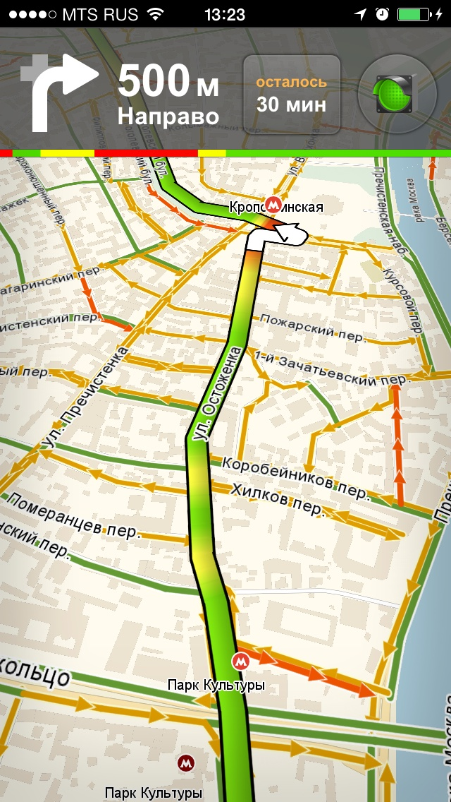
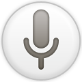
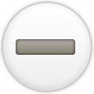
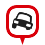

Вам предстоит 7 заданий.
Вы успешно прошли задание.
Нажмите "Cтарт" для начала задания №
1
Когда увидите интерфейс Навигатора, произнесите команду активации
После чего выполняйте подсказки на экране.
Старт




Говорите
Обработка
"ДТП средний ряд"
Отменить
Событие добавлено!
Спасибо. Вы успешно прошли все задания.
Вернуться в панель исследований